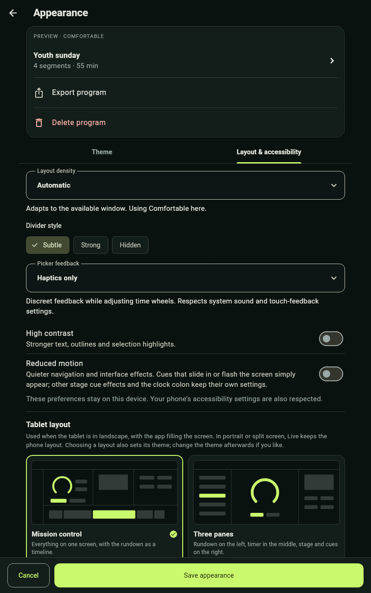
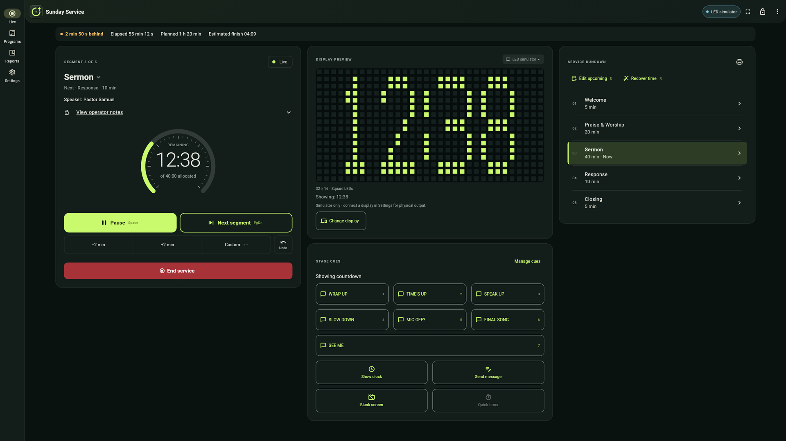
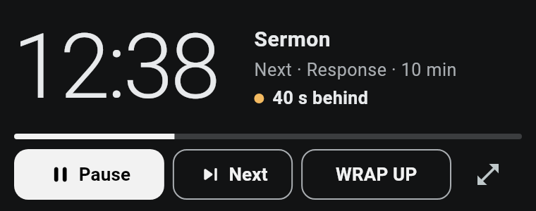

In a wide window, on a PC or a 10-inch or larger tablet held sideways, Live fills the screen instead of scrolling one column of cards. Everything works as in Operate a live service: every timer action still asks first, and Lock controls still blocks them all. This lesson covers what the wide screen adds.
The Live home, before a service
With no service loaded, a wide window shows three areas.
| Area | What it holds |
|---|---|
| Left: Choose a program | Your programs. Click one to see it in the middle. Edit programs opens Programs. |
| Middle | The time of day, then the chosen program's order of service with each segment, speaker and length, a small Print button beside the summary, and one Start service button. Under it: Quick timer, Share to screens and Join a service. The Last service card follows. |
| Right | The display preview and stage cues, already open. |
Start service opens Ready, where you check the display and start the first segment. Nothing counts until then. The picture of this page is in Get started on Windows.
Choose a desktop layout
Settings › Desktop layout lists five layouts. (On a tablet the row is Tablet layout; see below.) Each arranges the same timer, cues, display preview and rundown. Choosing a layout also sets the theme it comes with; you can pick any theme afterwards.

| Layout | What it is like | Comes with |
|---|---|---|
| Mission control | Everything on one screen, with the rundown as a timeline. A new install starts here. | Midnight Lime |
| Three panes | Rundown on the left, timer in the middle, stage and cues on the right. | Midnight Lime |
| The dial | The whole service as a ring, with the countdown inside. | Royal Navy |
| Keys | Dense and keyboard-first: the timer in a strip, the rundown as a table. | Graphite |
| Classic | One column of cards, as on a tablet. | Your current theme |
Click a layout, then Save appearance. If you already used the app before Mission control became the starting layout, your layout stays as it is.
A window narrower than 1200 or shorter than 600 keeps the phone and tablet layout. So does the focused operator view.
On a tablet
The same setting is called Tablet layout on an Android tablet, with the line "Used when the tablet is in landscape".


| Device | What Settings shows |
|---|---|
| PC | Desktop layout. |
| Tablet of 10 inches or more | Tablet layout. It is used with the tablet in landscape and the app filling the screen. In portrait or split screen, Live keeps the phone layout. |
| 7 or 8-inch tablet, or a phone | Nothing. The screen is never wide enough, so Settings, Settings search and Appearance do not offer a layout. Saved looks and keyboard keys on buttons are still there. |
The layout you had already chosen is kept.
Mission control
For seeing the whole service at a glance.

- The strip across the top says how far ahead or behind the service is, the time now, the time elapsed, the planned finish and when it is now set to end, with End service beside it.
- The timer, the display preview and the cues sit side by side.
- The rundown is a timeline along the bottom. Each segment is as wide as the time it takes. Finished segments show how long they really took, with the part that ran over marked. A line shows where the service is now. Click a segment for its details.
- The keys that work on Live are listed along the bottom edge, J Jump to segment among them.
- In a tall window it also lists the screens that have joined, under the display preview, and the service's latest activity, under the cues.
Three panes
The whole rundown is on the left, with how long each finished segment really took and how far ahead or behind the service is running. The timer and its controls are in the middle, with the private note in view. The display preview, cues and messages are on the right. Live, Programs, Reports and Settings become tabs in the header. In a window at least 800 high, the keys are listed under the middle pane, as they are in The dial.

The dial
Built around the app's own mark. The whole service is a ring, with a piece for each segment, running round to end at the cross. Finished segments fill in, with any overrun marked. Inside it, a second ring shows the time left in the running segment, with the countdown in the middle and the time the service is now set to end beside the cross. An Up next box above the rundown gives the next item, its length, who leads it and roughly when it starts. Click any part of the ring for that item's details.

Keys
Dense, and made to be run from the keyboard. The running segment is one strip across the top: its name, a large countdown, how far ahead or behind the service is, when it will end, and the timer controls. Below it the rundown is a table, with a column each for speaker, planned time, start, actual time, how far over or under, and state. The private note sits underneath. A status line along the bottom shows where the output is going and whether the controls are locked.
Before the first segment starts, Keys shows the three panes, which have room for the start controls. In a window as small as 1200 × 600, Recover time and Print move to a second line under Edit upcoming, so nothing runs off the pane.

Classic
The side rail and one column of cards, as before the desktop layouts. In a very wide window the rundown has a column of its own beside the timer and the display, so the whole service is in view without scrolling.


On a large monitor
The layouts grow with the window. A 1366 × 768 laptop window looks as described above.
| Layout | In a larger window |
|---|---|
| Three panes and The dial | From about 1920 × 1080 the ring grows to fill the height, with the buttons straight under it. In a wider window, such as 2560 × 1440, the ring sits at the left with the segment name, the controls, the private note and End service in a column at its right. |
| Mission control | In a tall window the ring is larger, the timeline is taller and each block adds the speaker, the planned time and how long the segment took or when it should start. |
| Classic | From about 1840 wide, the rundown gets its own column. |
Keys on the buttons
On a PC, Pause, Next segment, Custom and the cue buttons show the key that presses them. Turn this on or off with Show keyboard keys on buttons, under Settings › Desktop layout.
The line of keys along the bottom of Mission control and Keys, and under the middle pane of Three panes and The dial, follows the same switch. It reads, for example, "Space Pause · PgDn PgDn Next · + − Adjust time · Ctrl Z Undo · J Jump to segment · 1 – 9 Cues · M Message · Ctrl L Lock". When the line is too long for the room, the least needed keys are left out. With Clicker and foot pedal switched off, it stops listing Space and Page Down; see Keyboard, clicker and Commands.
Saved looks
Save this look keeps the layout, theme, spacing, contrast and key labels together under a name, such as "Sunday morning", so you can go back to it in one step. Up to 8 are kept, and they are included in backups. Reset to default returns to Mission control with Midnight Lime.
The mini timer (Windows)
If the same PC runs your lyrics or slides, the mini timer keeps the countdown in view above them.


To open it, click the mini timer button at the top of the window. It is there on every page: Live, Programs, Reports and Settings. You can also press Ctrl+M from any page, choose ⋮ › Mini timer on Live, or pick it from Commands.
The app shrinks to a small window that stays on top of other programs. It shows:
- the current segment and the time left, amber near the end and red with a "+" when over;
- what is next, and whether the service is ahead or behind;
- Pause or Resume, Next, your first prepared cue, and Expand.
Pause, Next and closing the window ask before acting, as usual, in a compact form. The cue button turns into Show timer while that cue is on stage. Adjusting time needs the full window. With Lock controls on, the buttons give way to Hold to unlock. Dragged very narrow, the window shows only the name and the countdown.
With no service running the mini timer still opens. It shows the time of day and, when a service is loaded, its name and start time, counting down in the last hour before it. There is nothing to pause, so it has only Expand.
To leave it, click Expand or press Ctrl+M again. The full window comes back exactly where it was. It also comes back by itself when the service ends.
Test the mini timer with your slides program on your PC before relying on it in a service.
Programs, Reports and Settings in a wide window
- Programs lists your programs on the left, with New program under the list, the chosen program's segments as a table in the middle, and a summary with Load into Live on the right. See Build a reusable program.
- Reports lists saved services down the left and opens the chosen one beside them. See Read, export and print reports.
- Settings sets its groups in two columns, and most pages put a preview or a summary beside the settings. See Make the workspace yours.
- Quick timer, Print, Export, Version history, Segment library, Recover time and Edit upcoming open as dialogs in the middle of the window, not as sheets across the bottom.